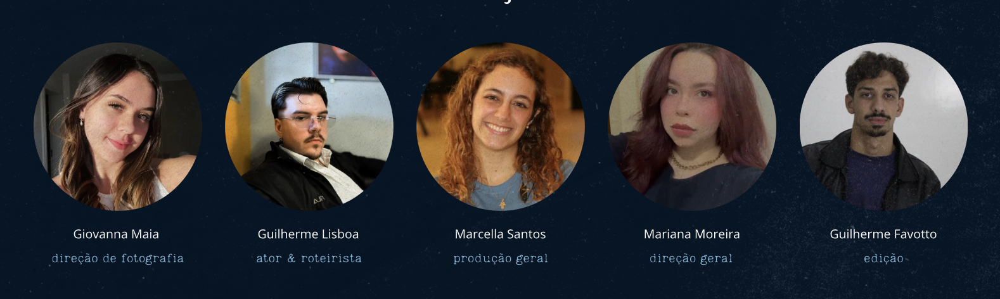

PARA ACOMPANHAR SUA VISITA
Uma trilha para ouvir.
Soft Resonant Chord
Não foi possível reproduzir o áudio. Confira sua conexão, recarregue a página ou baixe a música.
Quando amar
é também
se perder.
SINOPSE OFICIAL
Entre encontros, carinho e momentos de intimidade, o que parecia um romance capaz de transformar começa, aos poucos, a apagar quem Pedro realmente é. Preso entre o amor que sente e a pessoa que está deixando de ser, Pedro precisará enfrentar uma pergunta dolorosa: quando amar alguém significa perder a si mesmo, o que ainda resta para salvar?
Informações de acesso e conteúdo
Classificação indicativa: 16 anos. Contém cenas de violência física e psicológica, uso de drogas, crises de ansiedade, representação de sangue e violência. Duração, audiodescrição e Libras: informações ainda não fornecidas.
O site pode ser navegado por teclado e respeita a preferência por movimento reduzido. A meta é WCAG 2.2 AA; a avaliação completa ainda depende de testes assistivos e dos materiais finais.
Entre um olhar
e outro.
Registros originais do projeto.
Selecione uma imagem para ampliar.
Por trás
de nós.
Um projeto universitário.
Um olhar construído em conjunto.
- Direção
- Mariana Moreira
- Fotografia
- Giovanna Maia
- Edição
- Guilherme Favotto
- Produção geral
- Marcella Pinheiro
- Roteiro original
- Guilherme Lisboa
- Elenco
- Guilherme Lisboa como Pedro
Lino Gallesco como Fábio
Participação de Mariana Moreira
Conheça a equipe

Giovanna MaiaDireção de fotografia Guilherme LisboaAtor e roteirista Marcella PinheiroProdução geral Mariana MoreiraDireção geral Guilherme FavottoEdição
Patrocínios e apoios
Apoio
Patrocínio
Você ou alguém que conhece está ou já esteve em um relacionamento abusivo?
Sua resposta é privada: ela não é salva.
O abuso também atravessa estas histórias.
Onde buscar apoio
Central de Atendimento à Mulher
Orientação, acolhimento e denúncias de violência contra a mulher. Gratuito, 24 horas.
Polícia Militar
Emergências e situações de violência em andamento.
CVV — Centro de Valorização da Vida
Apoio emocional gratuito, 24 horas. Não substitui atendimento especializado em violência.
Disque 100 — Direitos Humanos
Recebe denúncias de violência e violações de direitos contra pessoas LGBTQIA+. Gratuito, sigiloso e disponível 24 horas.
ESTREIA OFICIAL · 11 DE NOVEMBRO DE 2026
Alguns encontros
merecem ficar.
Estreia oficial em 11 de novembro de 2026, às 19h (horário de Brasília), na UNICID.
Acompanhe as novidades em @agencia.phos